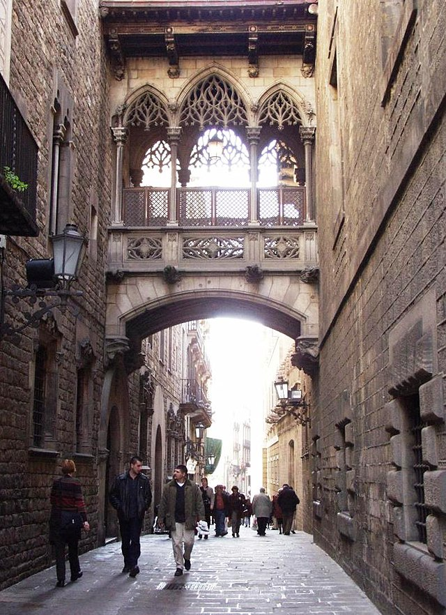
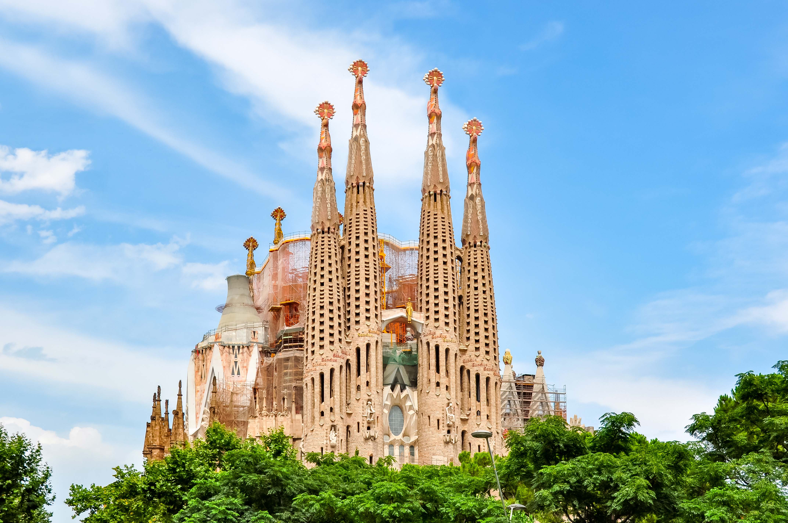
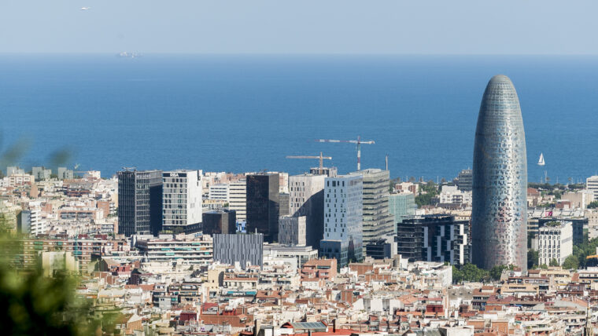
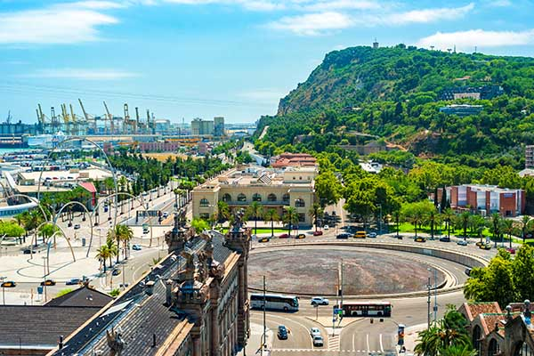
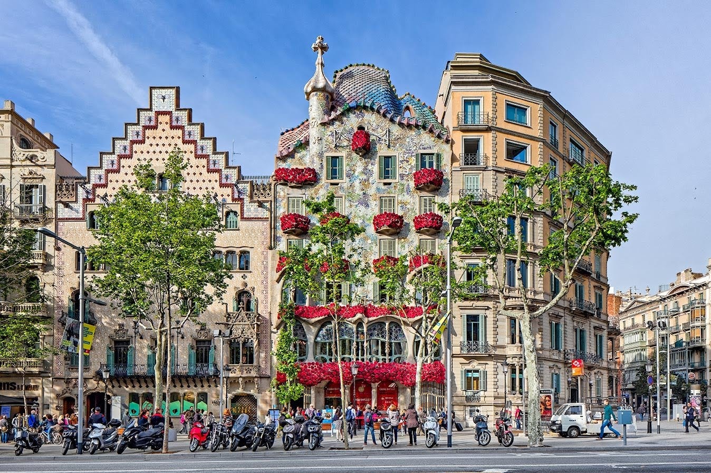

Pour le premier jour, vous allez faire une visite à pied historique de Barcelone : quartier gothique et El Born. Cette promenade guidée vous transportera à travers des siècles d’histoire, des vestiges romains aux ruelles médiévales, en passant par des monuments emblématiques et des places animées.
Pause déjeuner à La Alcoba Azul. Temps libre pour shopping dans le quartier gothique.
Dîner libre avec un budget de 15 à 20 euros par personne.
Matin : Visite de la Sagrada Família et promenade dans le parc de l’Avinguda Gaudí.
Déjeuner : Bar Lobo (près des Ramblas). Cuisine méditerranéenne avec des tapas modernes. Budget : ~15 € par personne.
Après-midi : Visite du Parc Güell. Retour à l’auberge pour se détendre avant le dîner.
Dîner : Cervecería Catalana (Example). Tapas variés et atmosphère conviviale. Budget : ~20 € par personne.
Soirée : Temps libre pour explorer les environs ou une sortie en groupe sur les Ramblas.
Matin : Visite d’entreprise à Barcelona Tech City.
Déjeuner : Els Quatre Gats. Budget : ~18-20 € par personne.
Après-midi : Exploration du quartier 22@.
Dîner : Rosa Negra (Mexicain stylé). Budget : ~15-20 € par personne.
Matin : Excursion à Montjuïc.
Déjeuner : Restaurant Martínez Montjuïc. Budget : ~20 € par personne.
Après-midi : Visite de la Fondation Joan Miró. Temps libre dans les jardins de Montjuïc ou retour à l’auberge.
Dîner : La Paradeta Sants ou Honest Greens Tuset.
Soirée : Optionnel : sortie à la Fontaine Magique de Montjuïc.
Matin : Temps libre pour shopping sur le Passeig de Gràcia.
Déjeuner : Restaurante Salamanca (Barceloneta). Budget : ~18 € par personne.
Après-midi : Temps libre pour un dernier repas en groupe et une promenade sur la plage de la Barceloneta.
Dîner : El Vaso de Oro (Barceloneta). Budget : ~20 € par personne.
Départ à 2h20 à la station de bus nord de Barcelone. Arrivée 1h à l'avance.
